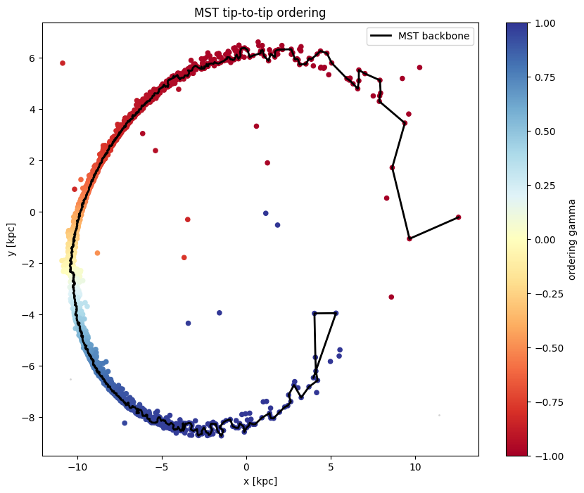
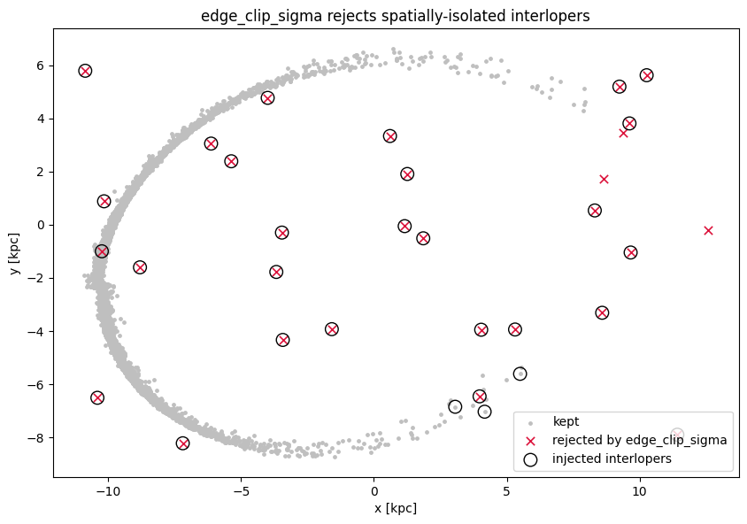
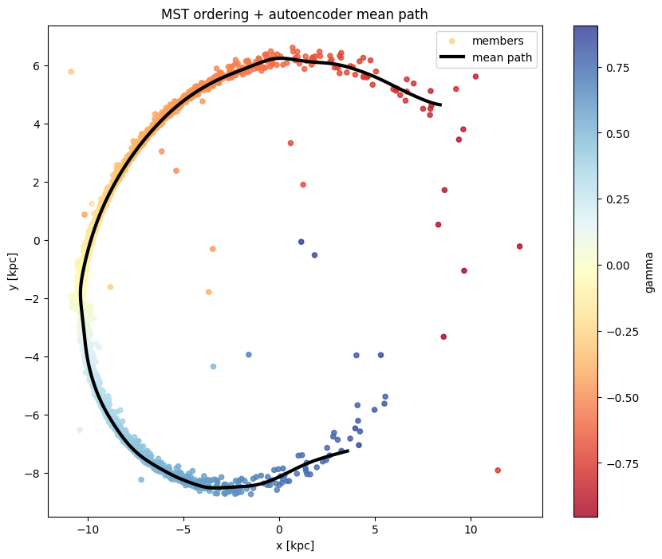
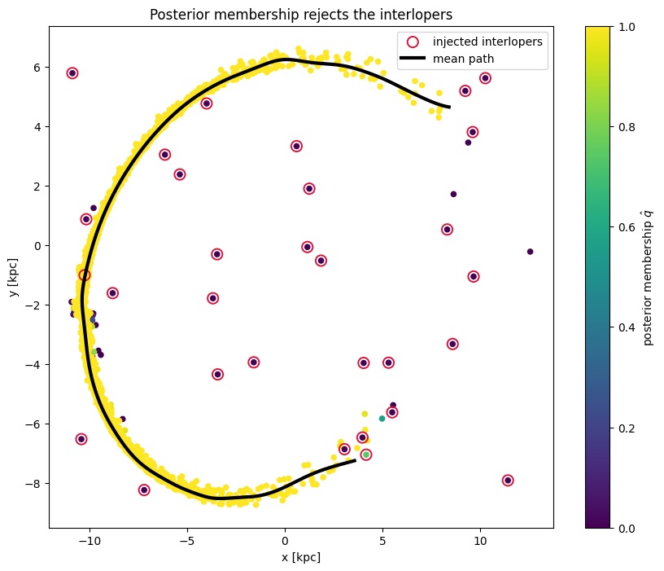

Ordering a Mock Stream with the MST Backbone#

Here we order a mock stellar stream with the MSTOrderer. A tidal stream’s velocity field points outward from the progenitor along both arms – it reverses at the progenitor. The local-flow walk in the stream autoencoder tutorial handles this by starting at the progenitor and walking both ways, which means knowing where the progenitor is. The MST needs no progenitor and no start index: it links each star to its near neighbours, keeps the minimum spanning tree of those links, and orders the stars along the tree’s longest path, which runs from one tip of the stream to the other.
We also scatter in a handful of interlopers and reject them two complementary ways: the MST’s own edge_clip_sigma removes the spatially-isolated ones at the orderer, and the mixture-model membership catches the rest, near the track.
The data are the same simulated stream as the stream autoencoder tutorial, which describes the simulation.
# On Colab, clone the repository, install the locked tutorial dependencies, and run
# from docs/tutorials. Elsewhere it does nothing: run from docs/tutorials with the
# `tutorials` extra.
import pathlib
import sys
repo = pathlib.Path("/content/phasecurvefit")
if "google.colab" in sys.modules:
%pip install -q uv
if not repo.exists():
!git clone -q --depth 1 https://github.com/GalacticDynamics/phasecurvefit {repo}
%cd {repo}
!uv export -q --frozen --extra tutorials --no-dev --no-editable --no-hashes -o r.txt
!uv pip install -q --system --python {sys.executable} -r r.txt
%cd docs/tutorials
import jax.random as jr
import matplotlib.pyplot as plt
import numpy as np
from scipy.spatial import cKDTree
import quaxed.numpy as jnp
import unxt as u
import phasecurvefit as pcf
key = jr.key(201030)
usys = u.unitsystems.galactic
Data: a mock stream#
Loads the simulated stream cached in mockstream.npz by the other stream tutorials.
# Positions in kpc and velocities in kpc/Myr, one row per star.
with np.load("mockstream.npz") as cache:
stream_q, stream_p = cache["q"], cache["p"]
Interlopers#
A real ordering never gets a clean catalogue. We scatter 30 field stars across the footprint with velocities uncorrelated with the stream. The MST has no reject option, so it threads them into the ordering along their cheapest edge – exactly the failure the mixture model is built to catch.
comps = ("x", "y", "z")
qs0 = {c: u.Q(stream_q[:, i], "kpc") for i, c in enumerate(comps)}
ps0 = {c: u.Q(stream_p[:, i], "kpc/Myr") for i, c in enumerate(comps)}
n_star = len(qs0["x"])
# 30 interlopers: uniform over the position footprint, random velocities.
N_OUT = 30
okey = jr.key(777)
lo = {c: float(u.ustrip(usys, qs0[c]).min()) for c in comps}
hi = {c: float(u.ustrip(usys, qs0[c]).max()) for c in comps}
q_out, p_out = {}, {}
for i, c in enumerate(comps):
kq, kp = jr.split(jr.fold_in(okey, i))
q_out[c] = u.Quantity(jr.uniform(kq, (N_OUT,), minval=lo[c], maxval=hi[c]), "kpc")
p_out[c] = u.Quantity(0.12 * jr.normal(kp, (N_OUT,)), "kpc/Myr")
qs_all = {c: jnp.concatenate([qs0[c], q_out[c]]) for c in comps}
ps_all = {c: jnp.concatenate([ps0[c], p_out[c]]) for c in comps}
is_outlier = jnp.concatenate(
[jnp.zeros(n_star, dtype=bool), jnp.ones(N_OUT, dtype=bool)]
)
print(f"{n_star} stream stars + {N_OUT} interlopers")
8000 stream stars + 30 interlopers
# Shuffle; no start index or progenitor is needed for the MST.
key, subkey = jr.split(key)
order = jr.permutation(subkey, jnp.arange(n_star + N_OUT))
qs = {c: qs_all[c][order] for c in comps}
ps = {c: ps_all[c][order] for c in comps}
is_outlier = is_outlier[order]
MST ordering#
jump_cap is the longest link the tree may use. We set it from the data: the 99.98th percentile of the stars’ nearest-neighbour distances. The percentile is high because the stream’s density varies a lot: the sparse tips have genuinely large gaps between stars, and the cap must keep them connected while still cutting any longer jump. k=16 is the number of neighbours each star is linked to before the tree is built. Real streams occasionally leave a stray point disconnected, so we keep the largest component (on_disconnected="largest"). No progenitor or start index is needed; orient_by_velocity gives gamma a physical direction.
comps = list(qs)
P = np.stack([np.asarray(u.ustrip(usys, qs[c])) for c in comps], axis=1)
nn = cKDTree(P).query(P, k=2)[0][:, 1]
jump_cap = float(np.percentile(nn, 99.98))
orderer = pcf.orderers.MSTOrderer(
k=16,
jump_cap=jump_cap,
orient_by_velocity=True,
on_disconnected="largest",
)
mstresult = orderer.order(qs, ps, metadata=pcf.StateMetadata(usys=usys))
print("coverage:", int((mstresult.indices >= 0).sum()), "/", len(is_outlier))
coverage: 8028 / 8030
_fig, ax = plt.subplots(figsize=(10, 8))
ax.scatter(qs["x"], qs["y"], s=1, c="lightgray")
oq = {k: v[mstresult.ordering] for k, v in mstresult.positions.items()}
timeline = np.linspace(-1, 1, len(mstresult.ordering))
im = ax.scatter(oq["x"], oq["y"], s=20, c=timeline, cmap="RdYlBu")
bx = mstresult.backbone
ax.plot(
u.ustrip(usys, bx["x"]), u.ustrip(usys, bx["y"]), c="k", lw=2, label="MST backbone"
)
plt.colorbar(im, ax=ax, label="ordering gamma")
ax.set(xlabel="x [kpc]", ylabel="y [kpc]", title="MST tip-to-tip ordering")
ax.legend()
plt.show()

What to look for: the colour should run smoothly from one tip to the other, with the black backbone (the tree’s longest path) along the middle of the stream. Note that the interlopers are coloured too: the MST has given every one of them a place in the ordering.
Rejecting interlopers at the orderer#
The MST threaded the 30 interlopers in, but most are spatially isolated – tied to the backbone by a single long edge. edge_clip_sigma robustly sigma-clips those edge lengths (in log space, keeping a continuous sparse tail) and leaves the isolated points unvisited before the autoencoder ever sees them. It is the cheap, geometric complement to the posterior membership below: clipping removes the obvious strays; the few that blend in near the track are left for the membership model.
Refining with a Self-Organizing Map#
Chaining a SOMOrderer after the clipping MST fits a lattice of prototypes —
each an average over many stars — and re-orders by arc length along a smooth
backbone through them. Two properties make it safe to chain here:
Rejected stars stay rejected. The SOM works on exactly the set the previous stage visited, so the interlopers
edge_clip_sigmacut do not come back. This matters: the SOM has no outlier rejection of its own, and contamination drags its backbone toward the interlopers.The prior ordering seeds the lattice, so the SOM refines it locally rather than re-deriving a global ordering. On this stream it leaves the MST ordering essentially untouched (rank correlation 0.998) and contributes the smooth backbone and the
chordarc-length parameter.
clipped = (
pcf.orderers.MSTOrderer(
k=16,
jump_cap=jump_cap,
orient_by_velocity=True,
on_disconnected="largest",
edge_clip_sigma=8.0, # reject outliers by MST edge length
)
| pcf.orderers.SOMOrderer()
).order(qs, ps, metadata=pcf.StateMetadata(usys=usys))
o = np.asarray(is_outlier)
kept = np.zeros(len(o), dtype=bool)
idx = np.asarray(clipped.indices)
kept[idx[idx >= 0]] = True
print(f"interlopers rejected: {int((o & ~kept).sum())}/{int(o.sum())}")
print(f"genuine stars cut : {int((~o & ~kept).sum())}/{int((~o).sum())}")
interlopers rejected: 27/30
genuine stars cut : 3/8000
_fig, ax = plt.subplots(figsize=(10, 8))
ax.scatter(
u.ustrip(usys, qs["x"])[kept],
u.ustrip(usys, qs["y"])[kept],
s=6,
c="0.75",
label="kept",
)
ax.scatter(
u.ustrip(usys, qs["x"])[~kept],
u.ustrip(usys, qs["y"])[~kept],
s=45,
c="crimson",
marker="x",
lw=1.2,
label="rejected by edge_clip_sigma",
)
ax.scatter(
u.ustrip(usys, qs["x"])[o],
u.ustrip(usys, qs["y"])[o],
s=110,
facecolors="none",
edgecolors="k",
lw=1.0,
label="injected interlopers",
)
ax.set(
xlabel="x [kpc]",
ylabel="y [kpc]",
title="edge_clip_sigma rejects spatially-isolated interlopers",
aspect="equal",
)
ax.legend()
plt.show()

Autoencoder mean path#
The MST’s ordering feeds the autoencoder exactly as the walk’s did in the stream autoencoder tutorial. The difference here is MixtureMembershipConfig, which switches membership to the stream-plus-background mixture model of the outlier rejection tutorial. It applies in the joint training phase, once a track exists to measure distances from.
sigma_init and sigma_ceiling are in the normalised coordinates the model trains in (roughly, units of the data’s standard deviation), not in kpc. The width ceiling starts loose and anneals down to 0.3, and warmup_frac=0.4 ramps the membership term in over the first 40% of the phase, so the track settles before membership can reject much.
key, model_key, train_key = jr.split(key, 3)
normalizer = pcf.nn.StandardScalerNormalizer(qs, ps)
model = pcf.nn.PathAutoencoder.make(
normalizer, gamma_range=mstresult.gamma_range, key=model_key
)
# Opt in to mixture-model membership (Hogg, Bovy & Lang 2010). The encoder's
# membership becomes a calibrated *posterior* driven by the reconstruction
# residual, so the interlopers the MST threaded in get rejected. See the
# outlier-rejection tutorial and the outlier-rejection guide.
# `membership=None` (the default) recovers the plain classifier behaviour.
membership = pcf.nn.MixtureMembershipConfig(
sigma_init=0.3, # guess at the stream half-width (normalised units)
sigma_ceiling=(1.0, 0.3), # anneal the width ceiling down
warmup_frac=0.4, # fit the track before rejecting anything
)
# Fewer epochs than the defaults (800 encoder, 200 joint) keep this page fast,
# and reject the same interlopers.
config = pcf.nn.TrainingConfig(
n_epochs_encoder=200, n_epochs_both=100, membership=membership
)
result, _, losses = pcf.nn.train_autoencoder(
model, mstresult, config=config, key=train_key
)
_fig, ax = plt.subplots(figsize=(10, 8))
all_gamma, all_probs = result.model.encode(mstresult.positions, mstresult.velocities)
qs_pred = result(jnp.linspace(*result.track_range, 1_000))
im = ax.scatter(
u.ustrip(usys, qs["x"]),
u.ustrip(usys, qs["y"]),
s=20,
c=np.asarray(all_gamma),
cmap="RdYlBu",
alpha=0.8,
label="members",
)
ax.plot(
u.ustrip(usys, qs_pred["x"]),
u.ustrip(usys, qs_pred["y"]),
c="k",
lw=3,
label="mean path",
)
plt.colorbar(im, ax=ax, label="gamma")
ax.set(xlabel="x [kpc]", ylabel="y [kpc]", title="MST ordering + autoencoder mean path")
ax.legend()
plt.show()

Posterior membership#
Because we trained with MixtureMembershipConfig, the encoder’s membership is a calibrated posterior: posterior_membership folds the encoder’s prior together with how far each star landed from the fitted track. The interlopers – far from the track – get a low posterior; the stream keeps a high one. Pass ws in the same normalised frame used for training.
Genuine stars also dip below 0.5 where they sit far from the track, which happens where the stream is broad and at the sparse, fanned-out tip of the upper tail. The mixture model counts those stars as background. That is why Hogg et al. recommend keeping the posterior as a weight rather than a hard threshold.
# posterior_membership expects ws in the normalised training frame.
qn, pn = result.model.normalizer.transform(qs, ps)
ws = jnp.concatenate([qn, pn], axis=1)
membership_prob = pcf.nn.posterior_membership(result.model, ws)
o = np.asarray(is_outlier)
caught = int((membership_prob[o] < 0.5).sum())
kept = int((membership_prob[~o] >= 0.5).sum())
print(f"interlopers rejected (posterior < 0.5) : {caught}/{int(o.sum())}")
print(f"stream stars kept (posterior >= 0.5): {kept}/{int((~o).sum())}")
interlopers rejected (posterior < 0.5) : 29/30
stream stars kept (posterior >= 0.5): 7984/8000
_fig, ax = plt.subplots(figsize=(10, 8))
o = np.asarray(is_outlier)
sc = ax.scatter(
u.ustrip(usys, qs["x"]),
u.ustrip(usys, qs["y"]),
s=20,
c=np.asarray(membership_prob),
cmap="viridis",
vmin=0,
vmax=1,
)
ax.scatter(
u.ustrip(usys, qs["x"])[o],
u.ustrip(usys, qs["y"])[o],
s=90,
facecolors="none",
edgecolors="crimson",
lw=1.4,
label="injected interlopers",
)
ax.plot(
u.ustrip(usys, qs_pred["x"]),
u.ustrip(usys, qs_pred["y"]),
c="k",
lw=3,
label="mean path",
)
plt.colorbar(sc, ax=ax, label=r"posterior membership $\hat{q}$")
ax.set(
xlabel="x [kpc]",
ylabel="y [kpc]",
title="Posterior membership rejects the interlopers",
)
ax.legend()
plt.show()

What to look for: the interlopers are dark (low posterior), while the stream stays bright. One interloper stays above 0.5: it landed about 0.6 kpc from the track, as far out as some genuine stars. The 31 genuine stars below 0.5 are spread along the stream, about a quarter of them near the progenitor, where the stream is broader than a single width allows.
Takeaways#
The
MSTOrdererorders a stream tip to tip with no progenitor or start index.It has no reject option, so interlopers get an ordering too.
edge_clip_sigmaremoves the spatially isolated ones cheaply at the orderer.Mixture-model membership catches the rest, and
posterior_membershipgives the number to use, ideally as a weight rather than a hard cut.
See also: the epitrochoid MST tutorial, for a curve that crosses itself and needs the MST to use velocities.